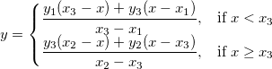
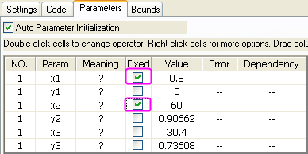
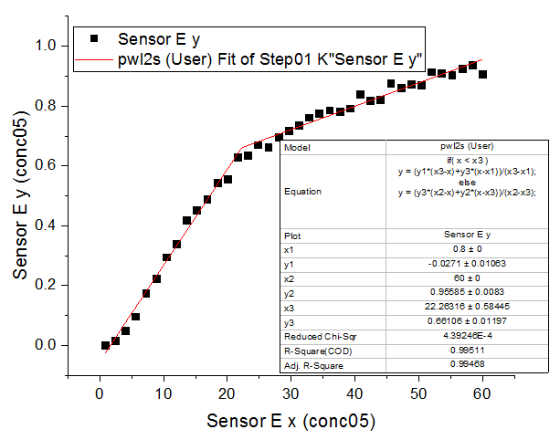

Mit einer stückweisen linearen Funktion anpassen
Fitting-Piecewise-Linear
Zusammenfassung
In diesem Tutorial zeigen wir Ihnen, wie Sie eine stückweise Anpassungsfunktion, die aus zwei linearen Segmenten besteht, definieren, eine Anpassung der Daten mit Hilfe dieser Anpassungsfunktion durchführen und die Schnittstelle für zwei lineare Segmente aus dem Anpassungsergebnis berechnen.
Origin-Version mind. erforderlich: Origin 8.6 SR0
Was Sie lernen werden
Dieses Tutorial zeigt Ihnen, wie Sie:
- eine stückweise (konditionale) Anpassungsfunktion definieren,
- Parameter automatisch initialisieren,
- die Schnittstelle der stückweisen Anpassungslinien berechnen.
Beispiel und Schritte
Daten importieren
- Öffnen Sie eine leere Arbeitsmappe. Wählen Sie Hilfe: Ordner öffnen: Sample-Ordner ... im Menü, um den Ordner "Samples" zu öffnen. Öffnen Sie in diesem Ordner den Unterordner Curve Fitting. Dort befindet sich die Datei Step01.dat. Ziehen Sie diese Datei per Drag&Drop in das leere Arbeitsblatt, um sie zu importieren.
- Klicken Sie mit der rechten Maustaste auf die Spalte Sensor E x (Spalte J) und wählen Sie Setzen als: Als X im Kontextmenü. Markieren Sie die Spalte Sensor E y und wählen Sie Zeichnen: Symbol: Punktdiagramm im Origin-Menü. Das Diagramm sollte folgendermaßen aussehen:

Anpassungsfunktion definieren
In dem Diagramm oben besteht die Kurve aus zwei Liniensegmenten. Sie kann mit einer stückweisen linearen Funktion angepasst werden. Der Ausdruck der Funktion kann folgendermaßen aussehen:
- 
wobei x1 und x2 die X-Werte der Kurvenendpunkte sind. Sie sind während der Anpassung festgelegt. x3 ist der X-Wert bei der Schnittstelle der zwei Segmente, und y1, y2 und y3 sind jeweils die Y-Werte bei  .
.
Die Anpassungsfunktion kann mit Hilfe des Hilfsmittels Fitfunktionen erstellen definiert werden.
- Wählen Sie Hilfsmittel: Fitfunktionen erstellen im Origin-Menü.
- Klicken Sie im Dialog Fitfunktionen erstellen auf der Seite Ziel auf die Schaltfläche Weiter.
- Wählen Sie auf der Seite Name und Typ die Option User Defined in der Auswahlliste Eine Kategorie auswählen oder erstellen, geben Sie pwl2s im Feld Funktionsname ein und wählen Sie Origin C in der Gruppe Funktionstyp. Klicken Sie auf die Schaltfläche Weiter.
- Geben Sie auf der Seite Variablen und Parameter die Parameter x1, y1, x2, y2, x3, y3 im Feld Parameter ein. Klicken Sie auf die Schaltfläche Weiter.
- Klicken Sie auf der Seite Origin C-Anpassungsfunktion auf die Schaltfläche
 rechts vom Funktionskörper und definieren Sie die Anpassungsfunktion im Code Builder folgendermaßen:
rechts vom Funktionskörper und definieren Sie die Anpassungsfunktion im Code Builder folgendermaßen:
if( x < x3 ) y = (y1*(x3-x)+y3*(x-x1))/(x3-x1); else y = (y3*(x2-x)+y2*(x-x3))/(x2-x3);
Klicken Sie auf die Schaltfläche Kompilieren, um den Funktionskörper zu kompilieren. Klicken Sie dann auf die Schaltfläche Zurück zum NSLF. Klicken Sie auf die Schaltfläche Weiter.
- Klicken Sie auf der Seite Parameterinitialisierungscode auf die Schaltfläche rechts vom Feld Initialisierungscode und initialisieren Sie die Anpassungsparameter im Code Builder folgendermaßen:
int n1, n2, n3; x_data.GetMinMax( x1, x2, &n1, &n2 ); x3 = x1 + (x2 - x1)/2; y1 = y_data[n1]; y2 = y_data[n2]; vector vd; vd = abs( x_data - x3 ); double xta, xtb; vd.GetMinMax( xta, xtb, &n3 ); y3 = y_data[n3];
Klicken Sie auf die Schaltfläche Kompilieren. Klicken Sie dann auf die Schaltfläche Zurück zum NSLF. Klicken Sie auf die Schaltfläche Fertigstellen.
Abgeleitete Parameter für Steigungen und Schnittpunkte mit der Y-Achse definieren
Während des Definitionsprozesses der Funktion können Sie auch einige zusätzliche abgeleitete Parameter wie Steigungen und Schnittpunkte mit Y-Achse definieren, die aus den Funktionsparameterwerten nach Ende des Anpassungsprozesses berechnet werden.
- Klicken Sie zweimal auf die Schaltfläche <<Zurück, um zur Seite Variablen und Parameter zu gelangen, und geben Sie a1,b1,a2,b2 im Feld Abgeleitete Parameter ein.
- Klicken Sie viermal auf die Schaltfläche Weiter, um zur Seite Abgeleitete Parameter zu gelangen, füllen Sie die Spalte Bedeutung aus und geben Sie die folgenden Gleichungen in dem Feld Abgeleitete Parametergleichungen ein. Klicken Sie dann auf die Schaltfläche Fertigstellen.
a1=(y1*x3-y3*x1)/(x3-x1);
b1=(-y1+y3)/(x3-x1);
a2=(y3*x2-y2*x3)/(x2-x3);
b2=(-y3+y2)/(x2-x3);
Kurve anpassen
- Wählen Sie Analyse: Anpassen: Nichtlinearer Fit im Origin-Menü. Wählen Sie im Dialog NLFit auf der Seite Einstellungen: Funktionsauswahl die Option User Defined in der Auswahlliste Kategorie und die Funktion pwl2s in der Liste Funktion.
- Wechseln Sie im Dialog NLFit zur Registerkarte Parameter und legen Sie die Parameter x1, x2 fest.

- Klicken Sie auf die Schaltfläche Fit, um die Kurve anzupassen.
Anpassungsergebnisse
Die angepasste Kurve sollte folgendermaßen aussehen:
-
- 
Die angepassten Parameter werden wie folgt gezeigt:
| Parameter |
Wert |
Standardfehler |
| x1 |
0,8 |
0 |
| y1 |
-0,0271 |
0,01063 |
| x2 |
60 |
0 |
| y2 |
0,95585 |
0,0083 |
| x3 |
22,26316 |
0,58445 |
| y3 |
0,66106 |
0,01197 |
| a1 |
-0,05275 |
0,01123 |
| b1 |
0,03206 |
8,153E-4 |
| a2 |
0,48715 |
0,01664 |
| b2 |
0,00781 |
3,6455E-4 |
Daraus ersehen wir, dass die Schnittstelle der zwei Segmente bei (22,26316, 0,66106) liegt.
Beachten Sie, dass die Anpassung mit einer stückweisen linearen Funktion für mehr als zwei Segmente auf ähnliche Weise durchgeführt werden kann.